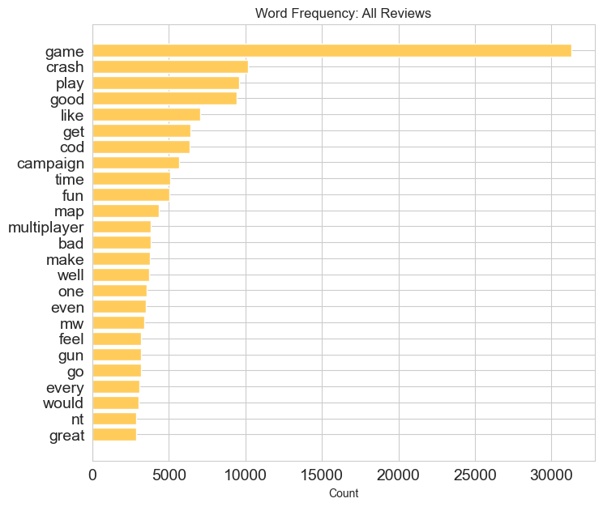
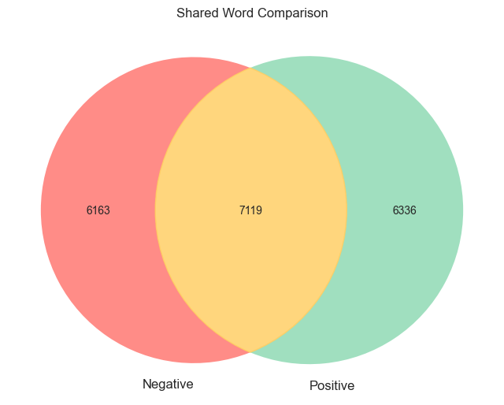
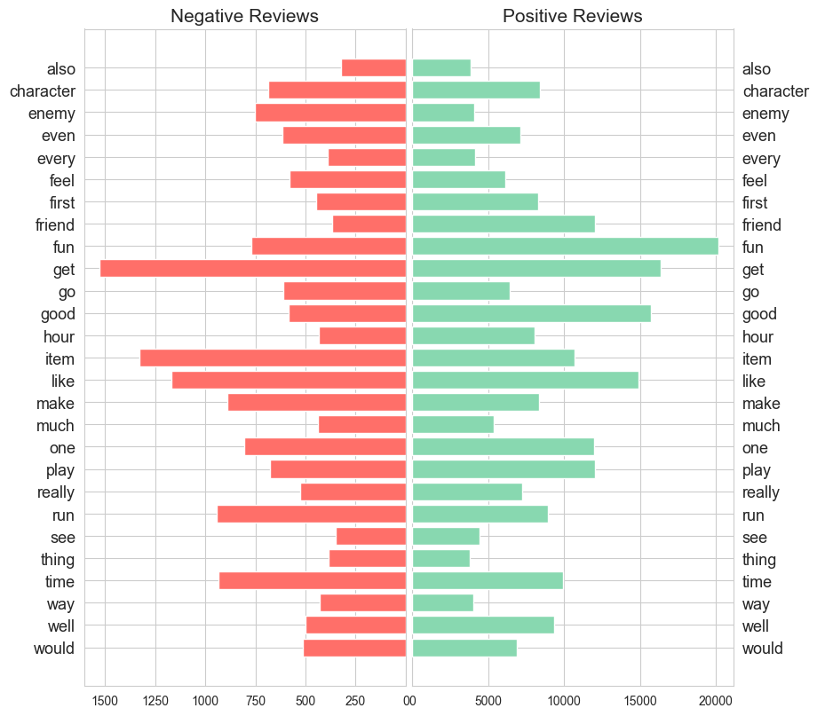

Text Based Exploratory Data Analysis
Contents
Text Based Exploratory Data Analysis#
Before beginning any analysis of the words that appear within review texts, it’s neccessary to first vectorise the text.
This is initially achieved using the ‘bag of words’ approach and the CountVectorizer from Scikit-Learn [Pedregosa et al., 2011].
import pandas as pd
# quantify missing
display(pd.DataFrame({'Missing':len(df.loc[df['review_text'].str.split().str.len()<1]),
'Present':len(df.loc[df['review_text'].str.split().str.len()>0]),
'Total':len(df)},index = ['Review Text']))
| Missing | Present | Total | |
|---|---|---|---|
| Review Text | 0 | 33706 | 33817 |
# load data
df = pd.read_csv('data/train_data_lemma.csv')
# drop entries with no review text
df = df[df['review_text'].str.split().str.len()>=1]
display(df.head())
from sklearn.feature_extraction.text import CountVectorizer
# initialise count vectoriser
count_vec = CountVectorizer()
bow = count_vec.fit_transform(df['review_text'])
print(f"Reviews in sample = {bow.shape[0]}")
print(f"Unique words in sample = {bow.shape[1]}")
| date | review_text | classification | |
|---|---|---|---|
| 0 | 2022-10-28 | infinityward never fail deliver | Positive |
| 1 | 2022-10-29 | trash fucking game beta wayy well | Negative |
| 2 | 2022-10-28 | even buggy beta playtest | Negative |
| 3 | 2022-11-03 | absolutely gorgeous game run well hardware run... | Negative |
| 4 | 2022-11-04 | fun | Positive |
Reviews in sample = 33706
Unique words in sample = 19618
Word Frequency#
All Reviews#
Here we can see the most commonly occuring nouns from across all reviews in the training dataset.
import matplotlib.pyplot as plt
import seaborn as sns
sns.set_style('whitegrid')
df_all = pd.DataFrame({"Count" :bow.sum(axis=0).tolist()[0]},
index = count_vec.get_feature_names_out()).sort_values(ascending = False, by = ("Count"))
fig, ax = plt.subplots(figsize=(8,7))
ax.barh(df_all.index[:25],df_all.Count[:25],align='center',color="#ffcc5c")
ax.invert_yaxis()
ax.tick_params(labelsize=14)
ax.set(title="Word Frequency: All Reviews",
xlabel="Count");

Positive vs Negative Reviews#
Comparing the words from within each review classification again reveals a balance between the two.
While several (7119) are shared acorss both positive and negative review categorisations, a relatively equal number of words distinguish each category.
# create postive and negative bag of words
pos_count_vec = CountVectorizer()
pos_bow = pos_count_vec.fit_transform(df.loc[:,'review_text'][df.classification == 'Positive'])
neg_count_vec = CountVectorizer()
neg_bow = neg_count_vec.fit_transform(df.loc[:,'review_text'][df.classification == 'Negative'])
from matplotlib_venn import venn2, venn2_circles
plt.subplots(figsize=(8,7))
v=venn2([set(neg_count_vec.get_feature_names_out()), set(pos_count_vec.get_feature_names_out())],set_labels = ("Negative", "Positive"),
set_colors = ("#FF6F69","#88D8B0"),
alpha = 0.8)
v.get_patch_by_id('11').set_color("#ffcc5c")
plt.title("Shared Word Comparison");

The following plot displays the most frequently occurring words common to both review classifications.
# create df of most frequent pos and neg nouns
df_pos = pd.DataFrame({'Count': pos_bow.sum(axis=0).tolist()[0]},
index= pos_count_vec.get_feature_names_out()).sort_values(ascending = False, by = 'Count')[:40]
df_neg = pd.DataFrame({'Count': neg_bow.sum(axis=0).tolist()[0]},
index= neg_count_vec.get_feature_names_out()).sort_values(ascending = False, by = 'Count')[:40]
# restrict each to nouns common to both
df_pos = df_pos.loc[df_pos.index.intersection(df_neg.index),].sort_index()
df_neg = df_neg.loc[df_neg.index.intersection(df_pos.index),].sort_index()
#create plotting space
sns.set_style('whitegrid')
fig, ax = plt.subplots(figsize=(8,8),ncols=2)
fig.tight_layout()
#left plot
ax[0].barh(df_neg.index, df_neg.Count, align='center',zorder=10,color = '#FF6F69')
ax[0].set_title('Negative Reviews',fontsize=15)
ax[0].invert_xaxis()
ax[0].invert_yaxis()
ax[0].tick_params(axis='y',labelsize=13)
#right plot
ax[1].barh(df_pos.index, df_pos.Count, align='center',zorder=10,color = '#88D8B0')
ax[1].set_title('Positive Reviews',fontsize=15)
ax[1].invert_yaxis()
ax[1].yaxis.tick_right()
ax[1].tick_params(axis='y',labelsize=13, right=False)
plt.subplots_adjust(wspace=0.02)
